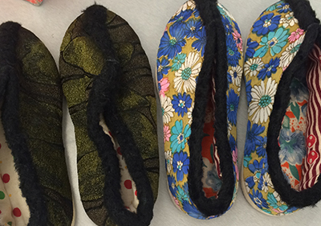

RePair Research
Two pairs of shoes to be used in a repair workshop
Summary
An ethnographic study of crafting communities in Seattle, culminating in a published paper about the effectiveness of workshopping as a research method.
My Role
I was a researcher, writer, and primary recruiter reaching out to crafting communities in Seattle. I facilitated 3 of 5 workshops and wrote and revised sections of our paper "Out of Place, Out of Time: Reflections on Design Workshops as a Research Method."
The Original Goal
The original goal of this work was to to investigate what motivates skilled crafters to repair some items while discarding others.
Our Methods
We designed a workshop in which we asked crafters to create a new item from 2 existing items in need of repair to study their acts of appropriation and reuse.
We asked participants to write about the history of their items.
Then we asked them to pair key words about what the item meant to them.
Our Findings
We found that for crafting communities in particular, there may be established methods and processes each individual uses to create things and by using workshops to study the process, we were actually disrupting these established practices, thereby binding time and participation in ways that privilege certain types of actions and foreclose others.